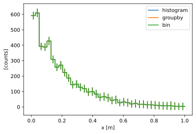
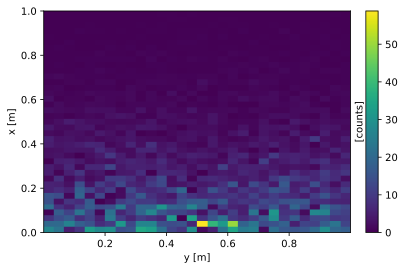
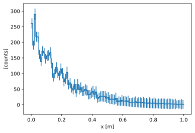
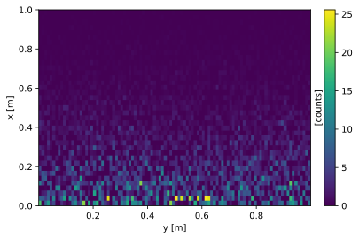

Histogramming, grouping, and binning#
Overview#
Histogramming (see sc.hist), grouping (using sc.groupby), and binning (see Binned data) all serve similar but slightly different purposes. Picking the optimal one of the three for a particular application may yield more natural code and better performance. Let us start by an example. Consider a table of scattered measurements:
[1]:
import numpy as np
import scipp as sc
N = 5000
values = 10 * np.random.rand(N)
table = sc.DataArray(
data=sc.array(
dims=['position'], unit=sc.units.counts, values=values, variances=values
),
coords={
'x': sc.array(dims=['position'], unit='m', values=np.random.rand(N)),
'y': sc.array(dims=['position'], unit='m', values=np.random.rand(N)),
},
)
table.values *= 1.0 / np.exp(5.0 * table.coords['x'].values)
sc.table(table['position', :5])
[1]:
| Coordinates | Data | |
|---|---|---|
| x [m] | y [m] | [counts] |
| 0.815 | 0.708 | 0.067±1.986 |
| 0.059 | 0.648 | 3.023±2.016 |
| 0.541 | 0.497 | 0.659±3.141 |
| 0.336 | 0.903 | 0.560±1.735 |
| 0.292 | 0.446 | 1.597±2.621 |
We may now be interested in the total intensity (counts) as a function of 'x'. There are three ways to do this:
[2]:
xbins = sc.linspace('x', 0, 1, num=40, unit='m')
ds = sc.Dataset(
{
'histogram': table.hist(x=xbins),
'groupby': table.groupby('x', bins=xbins).sum('position'),
'bin': table.bin(x=xbins).bins.sum(),
}
)
ds.plot()
[2]:

In the above plot we can only see a single line, since the three solutions yield exactly the same result (neglecting floating-point rounding errors):
histsorts data points into ‘x’ bins, summing immediately.groupbygroups by ‘x’ and then sums (on-the-fly) all data points falling in the same ‘x’ bin.binsorts data points into ‘x’ bins. Summing all rows in a bin yields the same result as grouping and summing directly.
So in this case we get equivalent results, but the application areas differ, as described in more detail in the following sections.
Histogramming#
scipp.hist directly sums the data and is efficient. Limitations are:
When histogramming in more than one dimension, the implementation uses
sc.bininternally, which may be less efficient and uses more memory.Can only apply “sum” or “nansum” to accumulate into a bin. scipp.nanhist is currently implemented differently and uses
sc.bininternally. It therefore uses more memory and may be less efficient.
We can also histogram binned data (since binning preserves the 'y' coord), to create 2-D (or N-D) histograms:
[3]:
binned = table.bin(x=xbins)
hist = binned.hist(y=30)
hist.plot()
[3]:

[4]:
hist
[4]:
- x: 39
- y: 30
- x(x [bin-edge])float64m0.0, 0.026, ..., 0.974, 1.0
Values:
array([0. , 0.02564103, 0.05128205, 0.07692308, 0.1025641 , 0.12820513, 0.15384615, 0.17948718, 0.20512821, 0.23076923, 0.25641026, 0.28205128, 0.30769231, 0.33333333, 0.35897436, 0.38461538, 0.41025641, 0.43589744, 0.46153846, 0.48717949, 0.51282051, 0.53846154, 0.56410256, 0.58974359, 0.61538462, 0.64102564, 0.66666667, 0.69230769, 0.71794872, 0.74358974, 0.76923077, 0.79487179, 0.82051282, 0.84615385, 0.87179487, 0.8974359 , 0.92307692, 0.94871795, 0.97435897, 1. ]) - y(y [bin-edge])float64m0.000, 0.033, ..., 0.966, 1.000
Values:
array([1.02928588e-04, 3.34253281e-02, 6.67477276e-02, 1.00070127e-01, 1.33392527e-01, 1.66714926e-01, 2.00037326e-01, 2.33359725e-01, 2.66682125e-01, 3.00004524e-01, 3.33326924e-01, 3.66649323e-01, 3.99971723e-01, 4.33294122e-01, 4.66616522e-01, 4.99938921e-01, 5.33261321e-01, 5.66583720e-01, 5.99906120e-01, 6.33228519e-01, 6.66550919e-01, 6.99873318e-01, 7.33195718e-01, 7.66518118e-01, 7.99840517e-01, 8.33162917e-01, 8.66485316e-01, 8.99807716e-01, 9.33130115e-01, 9.66452515e-01, 9.99774914e-01])
- (x, y)float64counts55.166, 30.415, ..., 0.149, 0.085σ = 7.641, 5.668, ..., 4.599, 3.438
Values:
array([[5.51657324e+01, 3.04149177e+01, 2.65526296e+01, ..., 1.04441214e+01, 7.34574342e+00, 3.10065758e+01], [3.70760103e+00, 0.00000000e+00, 1.31993363e+01, ..., 1.58405262e+01, 1.98148634e+01, 1.92888902e+01], [1.68479422e+01, 8.81197231e+00, 2.04826418e+01, ..., 3.98089384e+00, 6.63368030e+00, 1.90864335e+01], ..., [4.48664493e-01, 1.87834363e-01, 5.19549950e-01, ..., 1.01530945e-01, 1.77508205e-01, 3.74756395e-01], [6.67431300e-02, 2.11144465e-01, 2.84354674e-01, ..., 2.33982491e-01, 9.95116247e-02, 1.21805722e-01], [1.53442352e-01, 1.49570399e-01, 4.61532525e-02, ..., 6.92730652e-02, 1.48810132e-01, 8.45532861e-02]])
Variances (σ²):
array([[58.38199936, 32.12706128, 27.21816001, ..., 10.62832221, 7.39204798, 33.52185584], [ 4.73075107, 0. , 15.98978419, ..., 19.37609595, 24.1717367 , 23.44732881], [23.41671446, 12.32912014, 27.87981544, ..., 5.75452716, 8.92276287, 25.46584287], ..., [48.4728951 , 19.94059612, 56.81233391, ..., 10.92488727, 19.39010501, 39.65254089], [ 8.60525111, 26.16228634, 33.9429407 , ..., 28.29365508, 12.34451664, 14.31977045], [20.50901277, 20.55661587, 6.10076842, ..., 9.96720951, 21.15188426, 11.82213707]])
Another capability of hist is to histogram a dimension that has previously been binned with a different or higher resolution, i.e. different bin edges. Compare to the plot of the initial example:
[5]:
binned = table.bin(x=xbins)
binned.hist(x=100).plot()
[5]:

Grouping#
groupby is more flexible in terms of operations than can be applied and may be the go-to solution when a quick one-liner is required. Limitations are:
Can only group along a single dimension.
Works best for small to medium-sized data, or if data is already mostly sorted along the grouping dimension. Slow if millions of small input slices contribute to each group.
groupby can also operate on binned data, combining bin contents by concatenation:
[6]:
binned = table.bin(x=xbins)
binned.coords['param'] = sc.array(
dims=['x'], values=(np.random.random(39) * 4).astype(np.int32)
)
grouped = binned.groupby('param').concat('x')
grouped
[6]:
- param: 4
- param(param)int32𝟙0, 1, 2, 3
Values:
array([0, 1, 2, 3], dtype=int32)
- (param)DataArrayViewbinned data [len=1356, len=662, len=1541, len=1441]
dim='position', content=DataArray( dims=(position: 5000), data=float64[counts], coords={'x':float64[m], 'y':float64[m]})
Each output bin is a combination of multiple input bins:
[7]:
grouped.values[0]
[7]:
- position: 1356
- x(position)float64m0.005, 0.001, ..., 0.860, 0.859
Values:
array([5.36577322e-03, 7.30835264e-04, 1.85841876e-02, ..., 8.59291909e-01, 8.59537970e-01, 8.59484666e-01]) - y(position)float64m0.624, 0.162, ..., 0.599, 0.094
Values:
array([0.62430555, 0.16206523, 0.62669827, ..., 0.32097435, 0.59927565, 0.09411776])
- (position)float64counts8.482, 1.167, ..., 0.126, 0.063σ = 2.952, 1.082, ..., 3.046, 2.158
Values:
array([8.48206953, 1.16678796, 0.34113462, ..., 0.012604 , 0.12621778, 0.06333385])
Variances (σ²):
array([8.71271397, 1.17105941, 0.37435259, ..., 0.9256289 , 9.28075986, 4.6556801 ])
Binning#
scipp.bin actually reorders data and meta data such that all data contributing to a bin is in a contiguous block. Binning along multiple dimensions is supported. Of the three options it is the only solution that supports modifying data in the grouped/binned layout. A variety of operations on such binned data is available. Limitations are:
Requires copying and reordering the input data and can thus become expensive.
In the above example the 'y' information is dropped by hist and groupby, but bin preserves it:
[8]:
binned = table.bin(x=xbins)
binned.values[0]
[8]:
- position: 126
- x(position)float64m0.005, 0.001, ..., 0.001, 0.004
Values:
array([5.36577322e-03, 7.30835264e-04, 1.85841876e-02, 3.49495329e-03, 9.97342963e-03, 1.50243696e-02, 1.39525417e-02, 9.57340362e-03, 1.99413294e-02, 7.15371039e-05, 1.09876742e-02, 1.02220139e-02, 9.41525598e-03, 1.05576732e-02, 4.35864249e-03, 1.33747838e-02, 2.29225659e-02, 1.56589510e-02, 1.09714731e-02, 2.48739672e-02, 1.23819444e-02, 1.54208371e-02, 2.08793376e-02, 9.79444595e-03, 3.08521212e-03, 2.38805866e-02, 1.27884443e-02, 1.06789131e-02, 2.08517131e-02, 2.46741586e-02, 1.97431394e-02, 1.05805558e-02, 2.38410839e-02, 2.28925372e-02, 2.46706143e-02, 1.58849334e-02, 2.20919498e-02, 2.13690517e-02, 5.18230735e-03, 1.54390852e-02, 1.53245948e-02, 2.17539715e-02, 2.53315876e-02, 2.27749923e-02, 1.60931158e-02, 8.53023344e-03, 1.84080032e-02, 2.83790741e-03, 1.25069609e-02, 1.61825381e-02, 7.44919270e-03, 1.70193380e-02, 4.01389850e-03, 2.44756776e-02, 1.33080020e-02, 6.59230349e-04, 2.05173584e-02, 3.58743289e-04, 1.72899300e-02, 1.93778847e-02, 1.32731757e-02, 2.51731047e-02, 1.54117002e-03, 9.74294524e-03, 1.92047869e-03, 6.49753481e-03, 1.73188816e-02, 1.96254047e-02, 5.74486584e-03, 4.21620654e-03, 1.37745136e-02, 2.53660844e-02, 1.02633776e-02, 3.90549492e-04, 1.39745414e-02, 2.31804931e-02, 9.12106785e-03, 8.56314873e-04, 7.96216712e-03, 3.25461055e-03, 1.99971316e-02, 1.90429669e-02, 2.03173322e-03, 1.61272652e-02, 9.38511991e-03, 9.39844470e-04, 1.61546799e-02, 1.59707598e-02, 5.65824523e-03, 1.01014243e-02, 1.60768715e-02, 1.11916351e-02, 6.44975665e-03, 3.35201499e-03, 2.48638579e-02, 3.04516282e-03, 9.91833663e-03, 9.10999193e-03, 2.54474883e-03, 1.44549947e-02, 1.79856802e-02, 2.46496820e-02, 1.36880366e-02, 2.34708861e-02, 1.61173578e-02, 7.20036337e-03, 9.47744834e-03, 1.71543771e-02, 2.06149861e-04, 2.37833641e-02, 2.19538059e-02, 1.25843107e-02, 9.82661844e-03, 1.70239970e-03, 6.18338236e-03, 1.27486811e-02, 1.99043610e-03, 2.04505739e-02, 9.78405477e-03, 1.04410116e-02, 5.83084949e-04, 2.30203504e-02, 2.08596180e-02, 1.36237080e-02, 1.43975619e-03, 3.57436923e-03]) - y(position)float64m0.624, 0.162, ..., 0.587, 0.932
Values:
array([0.62430555, 0.16206523, 0.62669827, 0.44698828, 0.02608201, 0.28325403, 0.07472887, 0.98262497, 0.38978246, 0.140382 , 0.77196843, 0.27907697, 0.97965947, 0.83795369, 0.31626909, 0.47753022, 0.0169888 , 0.04915592, 0.11246519, 0.02407753, 0.21071158, 0.41504051, 0.28958895, 0.72163886, 0.39002008, 0.02002021, 0.50461512, 0.49962051, 0.19589282, 0.54548774, 0.32496766, 0.89061747, 0.84504304, 0.25705188, 0.81296744, 0.89656505, 0.43263486, 0.3366639 , 0.93083678, 0.87447533, 0.81227859, 0.2717176 , 0.68945956, 0.99853683, 0.4645805 , 0.79328667, 0.98368746, 0.03209334, 0.87756927, 0.40829511, 0.3127238 , 0.59887754, 0.00632817, 0.87107185, 0.52803117, 0.78247136, 0.47009508, 0.30133473, 0.75593906, 0.86156439, 0.9691828 , 0.4498789 , 0.52556562, 0.35371214, 0.94099659, 0.19639668, 0.48852263, 0.72061705, 0.07026167, 0.16655967, 0.53096132, 0.67617401, 0.2557849 , 0.92477656, 0.56806236, 0.28570803, 0.71361474, 0.94555985, 0.62332238, 0.84880451, 0.21843115, 0.55806658, 0.59983162, 0.03362472, 0.97574048, 0.07538803, 0.55679013, 0.44197212, 0.8905485 , 0.62252769, 0.97098817, 0.25207549, 0.69889225, 0.13575407, 0.69435449, 0.08717846, 0.38615303, 0.71228499, 0.25489844, 0.79077471, 0.30787122, 0.59893711, 0.3336873 , 0.80516988, 0.84735977, 0.92943576, 0.01505486, 0.35424012, 0.92954659, 0.13134853, 0.37207311, 0.83596829, 0.46980872, 0.03159006, 0.0658808 , 0.69949592, 0.09950266, 0.48844333, 0.02285196, 0.5001133 , 0.04488354, 0.20318735, 0.76815791, 0.05464707, 0.58655395, 0.93183054])
- (position)float64counts8.482, 1.167, ..., 9.410, 1.133σ = 2.952, 1.082, ..., 3.079, 1.074
Values:
array([8.48206953, 1.16678796, 0.34113462, 9.64541568, 2.83701059, 8.44390815, 5.51625094, 3.15296518, 0.24392196, 7.36565736, 2.41216829, 9.44326499, 9.04639955, 8.83952148, 3.16617092, 1.56197402, 2.30402281, 6.3086683 , 9.0901562 , 5.47130322, 6.50185088, 7.02140371, 2.29322638, 0.19023498, 8.54467515, 8.82347836, 5.57519111, 5.21552229, 3.3775563 , 5.75363884, 3.22565994, 0.50192525, 1.65014429, 5.59320916, 6.83828342, 8.55134549, 5.81892692, 2.18476125, 3.05364762, 8.84566195, 5.39289469, 7.50913142, 4.12032677, 8.52423082, 3.3713383 , 7.5533076 , 5.28323775, 6.49610905, 8.07070828, 3.26001751, 3.02971386, 4.25024053, 7.49869866, 4.06476674, 4.59597567, 6.18190582, 8.31424739, 5.36487833, 3.78180327, 6.53094498, 0.68135146, 6.8392514 , 0.87209581, 5.63223161, 2.75962834, 7.72764035, 6.87463965, 7.01544598, 3.59077413, 3.8773673 , 0.45003803, 8.71354136, 8.87867272, 0.62460643, 6.05073749, 2.75577367, 0.26412022, 4.58611508, 3.79378776, 0.74918164, 6.13393842, 3.83105067, 1.23409223, 4.92598518, 0.5905706 , 6.73506098, 2.97844181, 5.22856726, 3.68169932, 5.76624268, 3.72782043, 2.66097213, 5.88547138, 0.42563863, 5.86035197, 4.39534593, 4.33322065, 8.34751101, 2.99447818, 5.93296095, 6.93933803, 7.53176553, 0.06806349, 0.95933695, 0.80425316, 2.14962928, 5.37495349, 4.42395106, 3.48337512, 1.57097491, 5.53536849, 5.23227566, 9.15367368, 9.09239987, 6.49282375, 2.50131582, 6.3151976 , 7.54526148, 7.26775635, 4.65337361, 4.64019225, 4.83860735, 3.5492234 , 8.04724819, 9.41017551, 1.13286291])
Variances (σ²):
array([8.71271397, 1.17105941, 0.37435259, 9.81544838, 2.98207103, 9.10266384, 5.91482056, 3.30755867, 0.26949639, 7.36829242, 2.54839671, 9.93845779, 9.48245376, 9.31868114, 3.23592932, 1.67000119, 2.58382142, 6.8224549 , 9.60274943, 6.19589312, 6.91710001, 7.58420157, 2.54557464, 0.1997831 , 8.67750774, 9.94250595, 5.94332546, 5.50157162, 3.74870717, 6.50911362, 3.56033008, 0.52919341, 1.85905473, 6.27150211, 7.73603908, 9.25823388, 6.49852752, 2.4311194 , 3.13380636, 9.55555432, 5.82235758, 8.37197368, 4.67668915, 9.55235532, 3.65382793, 7.88243391, 5.7925878 , 6.58894291, 8.59152326, 3.53475948, 3.14468631, 4.62775683, 7.65071407, 4.59392486, 4.91219592, 6.20231594, 9.21246436, 5.37451003, 4.12328676, 7.19539379, 0.72810419, 7.75659776, 0.87884201, 5.91339708, 2.78625501, 7.982816 , 7.49648044, 7.73875878, 3.69541235, 3.95997387, 0.4821256 , 9.89182556, 9.34619179, 0.62582732, 6.48863945, 3.09442063, 0.2764444 , 4.60579297, 3.9478683 , 0.76147284, 6.77895313, 4.21375396, 1.24669285, 5.33965272, 0.61894399, 6.76678501, 3.22900384, 5.66321127, 3.78734651, 6.06495916, 4.03985211, 2.81412026, 6.07836424, 0.43283248, 6.63612995, 4.46278072, 4.55352997, 8.73653249, 3.03282258, 6.37764163, 7.5923016 , 8.51967241, 0.07288488, 1.0787916 , 0.87174843, 2.22842981, 5.63578904, 4.82015019, 3.48696746, 1.7693517 , 6.17758346, 5.57207688, 9.61465393, 9.17012469, 6.69669714, 2.66594963, 6.37836137, 8.35761098, 7.63213712, 4.90275613, 4.65374012, 5.42885743, 3.93939402, 8.6145164 , 9.47816171, 1.15329126])
If we omit the call to bins.sum in the original example, we can subsequently apply another histogramming or binning operation to the data:
[9]:
binned = binned.bin(y=100)
binned
[9]:
- x: 39
- y: 100
- x(x [bin-edge])float64m0.0, 0.026, ..., 0.974, 1.0
Values:
array([0. , 0.02564103, 0.05128205, 0.07692308, 0.1025641 , 0.12820513, 0.15384615, 0.17948718, 0.20512821, 0.23076923, 0.25641026, 0.28205128, 0.30769231, 0.33333333, 0.35897436, 0.38461538, 0.41025641, 0.43589744, 0.46153846, 0.48717949, 0.51282051, 0.53846154, 0.56410256, 0.58974359, 0.61538462, 0.64102564, 0.66666667, 0.69230769, 0.71794872, 0.74358974, 0.76923077, 0.79487179, 0.82051282, 0.84615385, 0.87179487, 0.8974359 , 0.92307692, 0.94871795, 0.97435897, 1. ]) - y(y [bin-edge])float64m0.000, 0.010, ..., 0.990, 1.000
Values:
array([1.02928588e-04, 1.00996484e-02, 2.00963683e-02, 3.00930882e-02, 4.00898080e-02, 5.00865279e-02, 6.00832477e-02, 7.00799676e-02, 8.00766874e-02, 9.00734073e-02, 1.00070127e-01, 1.10066847e-01, 1.20063567e-01, 1.30060287e-01, 1.40057007e-01, 1.50053726e-01, 1.60050446e-01, 1.70047166e-01, 1.80043886e-01, 1.90040606e-01, 2.00037326e-01, 2.10034046e-01, 2.20030765e-01, 2.30027485e-01, 2.40024205e-01, 2.50020925e-01, 2.60017645e-01, 2.70014365e-01, 2.80011085e-01, 2.90007804e-01, 3.00004524e-01, 3.10001244e-01, 3.19997964e-01, 3.29994684e-01, 3.39991404e-01, 3.49988124e-01, 3.59984843e-01, 3.69981563e-01, 3.79978283e-01, 3.89975003e-01, 3.99971723e-01, 4.09968443e-01, 4.19965163e-01, 4.29961882e-01, 4.39958602e-01, 4.49955322e-01, 4.59952042e-01, 4.69948762e-01, 4.79945482e-01, 4.89942202e-01, 4.99938921e-01, 5.09935641e-01, 5.19932361e-01, 5.29929081e-01, 5.39925801e-01, 5.49922521e-01, 5.59919240e-01, 5.69915960e-01, 5.79912680e-01, 5.89909400e-01, 5.99906120e-01, 6.09902840e-01, 6.19899560e-01, 6.29896279e-01, 6.39892999e-01, 6.49889719e-01, 6.59886439e-01, 6.69883159e-01, 6.79879879e-01, 6.89876599e-01, 6.99873318e-01, 7.09870038e-01, 7.19866758e-01, 7.29863478e-01, 7.39860198e-01, 7.49856918e-01, 7.59853638e-01, 7.69850357e-01, 7.79847077e-01, 7.89843797e-01, 7.99840517e-01, 8.09837237e-01, 8.19833957e-01, 8.29830677e-01, 8.39827396e-01, 8.49824116e-01, 8.59820836e-01, 8.69817556e-01, 8.79814276e-01, 8.89810996e-01, 8.99807716e-01, 9.09804435e-01, 9.19801155e-01, 9.29797875e-01, 9.39794595e-01, 9.49791315e-01, 9.59788035e-01, 9.69784755e-01, 9.79781474e-01, 9.89778194e-01, 9.99774914e-01])
- (x, y)DataArrayViewbinned data [len=1, len=3, ..., len=1, len=0]
dim='position', content=DataArray( dims=(position: 5000), data=float64[counts], coords={'x':float64[m], 'y':float64[m]})
As in the 1-D example above, summing the bins is equivalent to histogramming binned data:
[10]:
binned.bins.sum().plot()
[10]:
